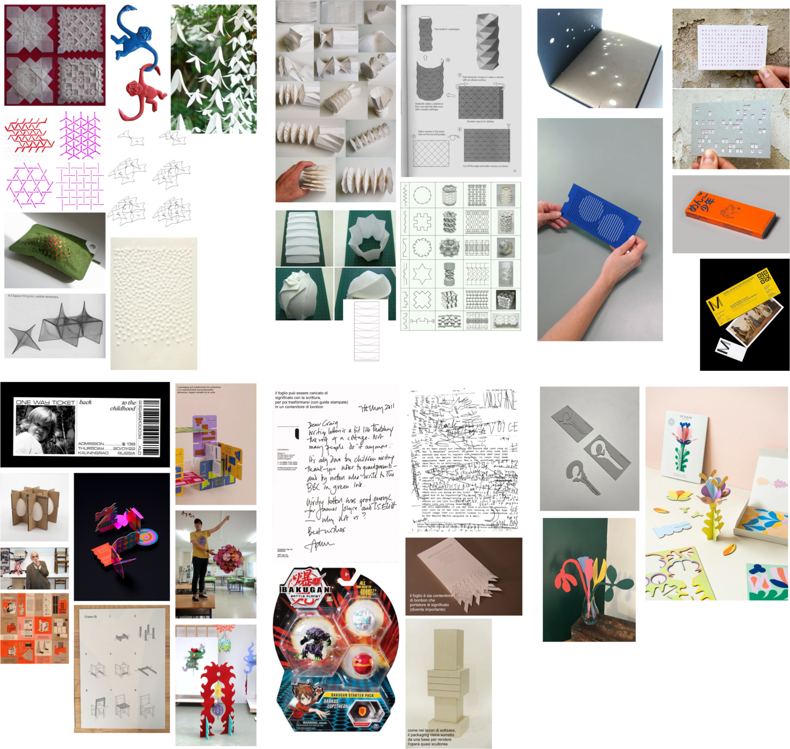
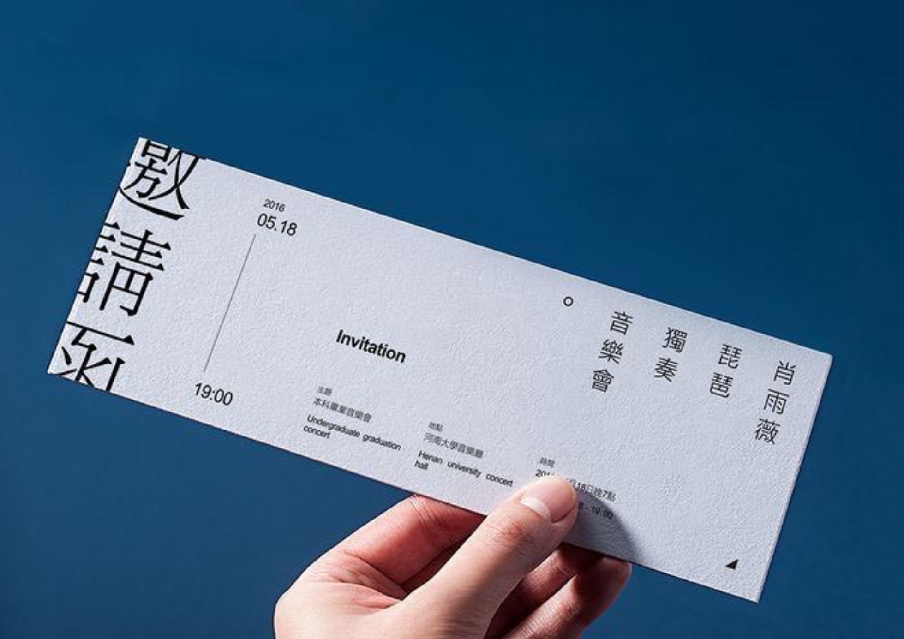
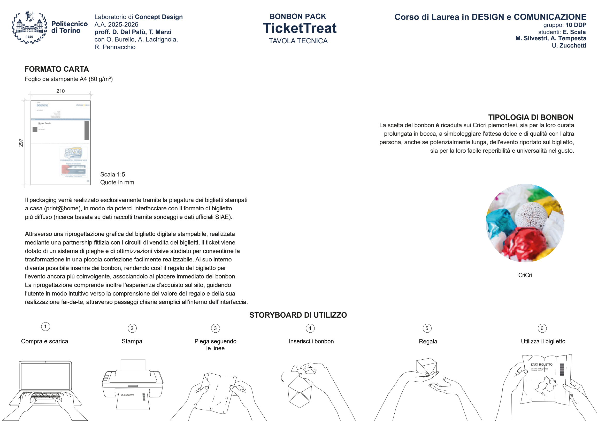
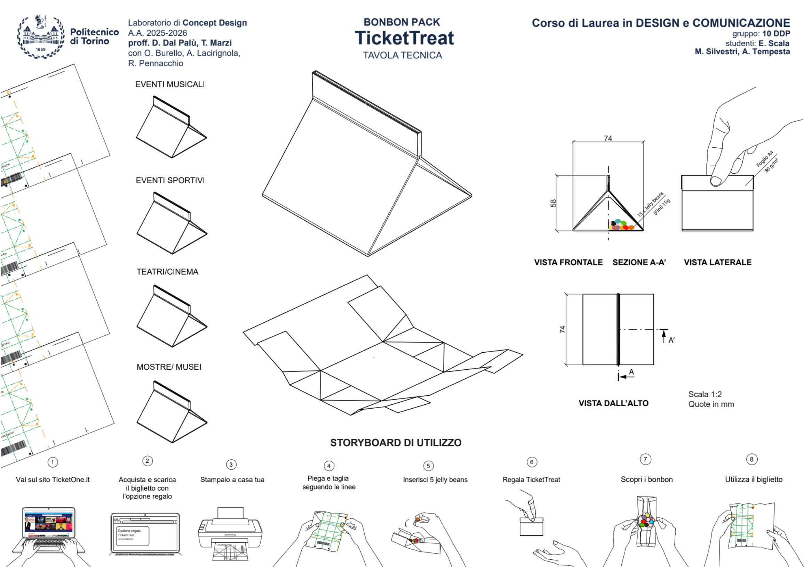
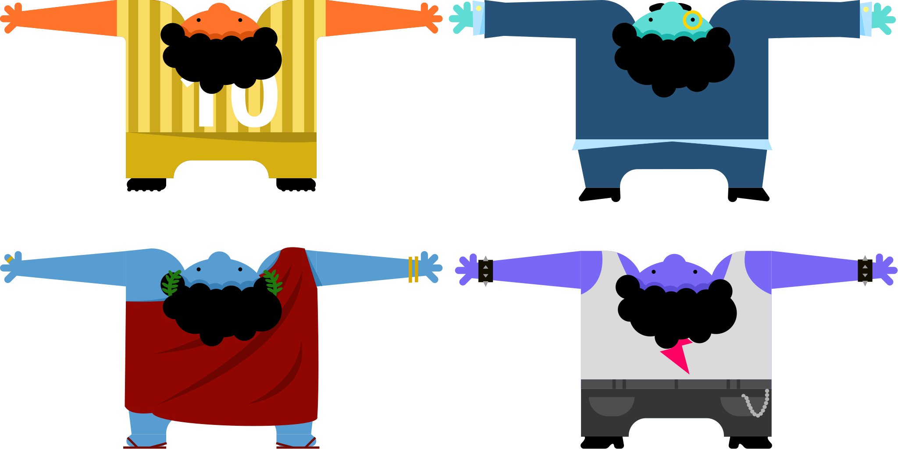

TICKETTREAT
Il progetto nasce da un lavoro scolastico durante il secondo periodo del primo anno di Università. Si chiedeva di progettare un packaging per bonbon, che girasse attorno al tema del dono. Il politecnico si concentra molto sulla sostenibilità e il fine vita, quindi era caldamente consigliato utilizzare materiali riciclabili e forme semplici

Già dalle primissime ricerche sul concept del packaging, mi son concentrato sulla trasformazione, ovvero come dare nuova vita alla confezione dopo il suo utilizzo.
Dopo un po' di riflessioni e domande ad amici e compagni di corso, ho capito che le persone conservano oggetti in carta (il materiale che avevo scelto), per decorazione o perché son legati emotivamente all'oggetto per un'esperienza personale vissuta

Cosa c'è allora di più significativo e legato da un esperienza di un biglietto? dopo la prima revisione con i professori, abbiamo capito che bisognava trasformare qualcosa di già esistente in pacchetto piuttosto che viceversa.
Con il gruppo di lavoro abbiamo iniziato a fare ricerca sulle realtà che vendevano biglietti, che tipo di biglietti, misure, colori, tipi di carta.

La prima scheda tecnica che abbiamo creato definiva il nome e l'utilizzo: abbiamo puntato sull'opzione regalo di molti negozi online di biglietti, riprogettandola graficamente per trasformarla in un pacchetto fai da te.
Il foglio da stampare a casa ha delle linee di piega e taglio semplice che permettono all'utente di crearsi da solo il regalo per il suo caro.
Mancavano però ancora molte cose

Con la seconda scheda abbiamo definito la forma del pacchetto e il preciso schema di pieghe, oltre a definire il tipo di bonbon da inserire: i jelly beans!
Colorati, leggeri, buoni, erano perfetti per un pacchetto piccolo.
Al pacchetto mancava la chiusura, e cercando come farla ci siamo accorti che una di queste ricordava molto il gesto dell'abbraccio: due linguette entrano all'interno dell'estremità del pacchetto, sigillandolo.
La grafica, che dovevamo rimanere semplice per evitare lo spreco di inchiostro, si è evoluta di conseguenza.
Ho deciso di creare otto personaggi che facessero intuire il tipo di evento del biglietto, attraverso i loro vestiti, e li ho colorati con colori neutrali e accesi, riprenendo le forme dei jelly beans.


TORNA